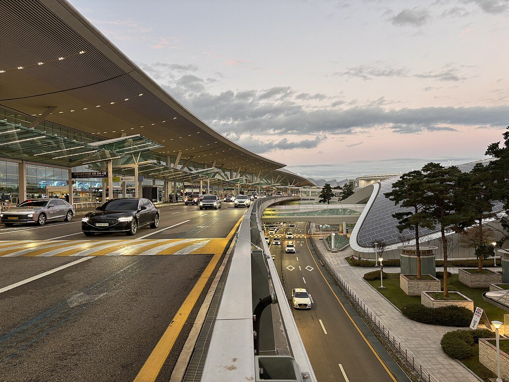
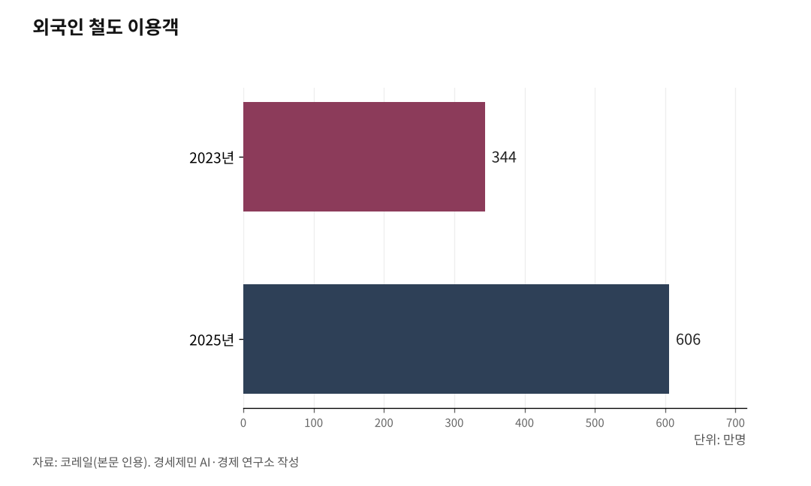

[127년 한국철도-번외] 외국인 606만명 이용, 국제공항을 고속철도로 잇자
외국인 철도 이용객의 30%가 서울~부산에 몰렸다… 관문이 인천 하나에 쏠린 탓이다
먼저 인천공항을 전국과 직결하고, 다음 5극3특 관문을 다극화하자
양양은 철도가 없다… 빈칸을 메우면 공항끼리 KTX로 이어진다
인하대 해양AI융합센터 김갑봉 연구교수

한국철도가 1899년 경인선으로 첫 기적을 울린 지 127년이 됐다. 그 철길 위로 지난해 외국인 606만명이 올라탔다. 코레일이 집계한 역대 최대다.
문제는 이 외국인이 서울과 부산 한 축에만 몰린다는 점이다. 입국 관문이 인천 하나에 쏠리고, 그 인천조차 전국으로 곧장 뻗는 철길이 약한 탓이다. 공항부터 다시 짜야 쏠림이 풀린다.
1. 외국인 606만 시대, 인천으로 들어와 서울서 갈아탄다
외국인 철도 이용객은 2023년 344만명에서 지난해 606만명으로 3년 새 76% 늘었다. 올해 1분기에도 169만3000명이 열차를 타 전년 같은 기간 115만6000명보다 46.5% 증가했다.
쏠림은 뚜렷하다. 코레일의 지난해 외국인 출발·도착 통계를 보면 서울→부산 15.2%와 부산→서울 15.1%를 더한 양방향이 30.3%다. 3위 동대구→서울 1.6%의 약 10배다. 역으로 봐도 서울역 27.4%와 부산역 20.0%가 외국인 이용의 절반에 육박한다.
뿌리는 입국 관문이다. 인천공항은 2024년 국제선 여객 7066만명을 처리한 세계 3위 공항이다. 한국에 오는 외국인 대다수가 인천 한 곳으로 들어온다.
그런데 인천에서 전국으로 흩어지는 길이 막혀 있다. 미주와 유럽에서 온 장거리 관광객은 인천에 내려 공항철도로 서울역까지 간 뒤 다시 고속철도로 갈아탄다. 인천발 KTX마저 송도가 기점이지 공항이 기점이 아니다. 부산 쪽도 좁다. 김해공항은 공군과 활주로를 함께 쓰고 인근 산 탓에 장거리 대형기 운항이 막혀, 외국인은 인천으로 들어와 철도로 부산까지 내려간다.

2. [1단계] 인천공항을 전국과 직결하라 — 제2공항철도로 서울 병목을 푼다
먼저 관문을 인천 하나로 두되, 인천에서 전국으로 뻗는 직결성을 끌어올리는 것이 1단계다. 관문을 늘리는 일이 아니라, 지금 관문이 가진 환승 병목을 없애는 일이다.
핵심은 제2공항철도다. 수인분당선 인천역 인근에서 해저터널을 뚫어 인천공항 제1터미널까지 16.6km를 잇는 노선이다. 정거장 2개를 놓고 예상 사업비는 1조7000억원이다. 2026년 12월 개통하는 인천발 KTX를 공항까지 끌어오면, 인천공항에서 경부선으로 부산이, 호남선으로 목포가, 경강선으로 강릉이 서울역을 거치지 않고 직결된다.
다만 경제성이 발목을 잡는다. 제2공항철도의 비용 대비 편익(B/C)은 0.76으로 기준치 1에 못 미쳐 제4차 국가철도망에서 탈락했다. 인천시는 제5차 국가철도망(2026~2035)에 이 노선을 최우선 사업으로 건의했다. 1단계의 성격은 분명히 직결성 강화다. 관문을 분산하지 않고도, 관문 하나의 연결성만 높여 병목을 푸는 단계다.
3. [2단계] 관문을 5극3특으로 다극화하라 — 무안·청주·대구·가덕도
직결성을 갖춘 뒤에는 관문 자체를 늘린다. 이재명 정부가 지난해 9월 확정한 5극3특 균형성장 전략과 맞물리는 2단계다. 정부는 권역마다 관문공항을 키우고 철도로 잇겠다고 밝혔다. 5극은 수도권·충청권·호남권·대경권·부울경권, 3특은 전북·강원·제주다.
밑그림은 이미 깔리고 있다. 무안공항은 2027년 하반기 호남고속선 2단계 고막원~무안공항~임성리 44.57km가 공항을 통과하면서, 지방공항 가운데 유일하게 고속철도역을 품는다. 가덕도신공항은 부전~신공항 연결선 6.58km(6025억원)가 올해 3월 예비타당성조사를 통과해 부전에서 26분에 닿는다.
대구경북신공항 광역철도는 서대구~의성 70.1km로 제4차 국가철도망에 반영돼 예비타당성조사를 받고 있다. 청주공항은 충북선 고속화로 KTX-이음이 정차해 강릉과 목포를 잇는 강호축에 들어간다. 전북 관문으로 추진하던 새만금공항은 지난해 법원이 기본계획을 취소해 불확실해졌지만, 전북에는 이미 군산공항과 고속철도 익산역이 있다. 권역 관문을 철도에 물리면, 외국인은 가까운 공항으로 들어와 곧장 목적지로 향한다.
4. 양양은 맹점, 공항끼리 잇는 빈칸을 메우자
다극화에는 빈칸이 있다. 강원 관문 양양공항은 지금 철도가 닿지 않는다. 국내선은 제주 노선 하나뿐이고 국제선은 끊긴 상태다. 철길에서 비켜선 공항이 활기를 잃은 셈이다.
빈칸을 메울 단서는 가까이 있다. 춘천~속초 동서고속화철도 93.7km가 KTX-이음으로 용산~속초를 99분에 잇고, 2029년 개통이 전망된다. 속초역에서는 동해선과 남쪽으로 이어진다. 여기에 속초~양양공항을 잇는 짧은 연결만 더하면 양양도 철도망에 들어온다.
빈칸을 메우면 그림이 달라진다. 공항과 공항이 고속철도로 묶이면, 어느 공항으로 들어와도 철도로 이동해 다른 공항에서 나갈 수 있다. 입국과 출국의 관문이 하나의 그물망이 되는 셈이다.
5. 항공과 철도를 잇는 중견국의 길
앞선 나라들은 이미 공항과 고속철도를 한 몸으로 묶었다. 프랑스 파리 샤를드골공항은 떼제베(TGV) 역이 터미널 안에 있어 리옹까지 1시간57분, 마르세유까지 3시간20분에 닿는다. 독일 프랑크푸르트공항도 인터시티익스프레스(ICE) 역이 공항 안에 있다. 중국 상하이 훙차오는 공항과 고속철도, 지하철을 하나로 묶어 난징까지 1시간, 항저우까지 45분에 잇는다. 하늘길과 철길을 잇는 일은 항공 강국의 표준이 됐다.
한국은 세계 3위 관문공항과 세계 수준의 고속철도를 모두 가졌다. 둘을 잇기만 하면 된다. 1단계로 인천공항을 전국과 직결하고, 2단계로 5극3특 관문을 철도에 물려 공항끼리 묶으면, 입출국 병목이 풀리고 항공과 철도가 한 그물이 된다.
1899년 경인선에서 출발한 127년의 철길이 이제 하늘과 만나는 길 앞에 섰다. 항공과 철도를 잇는 일이 녹색교통 중견국으로 가는 다음 장이다.
※ 이 기사는 AI 프로그램 클로드를 활용해 작성했습니다.
참고문헌
· "코레일, 2025년 철도 이용객 1억4600만명 역대 최고", 한국철도공사, 2026.1.14.
· "외국인 KTX 승객 월 60만 시대 역설", 아주경제, 2026.6.15.
· "인천공항, 2024년 국제선 여객 7066만명 세계 3위", 인천국제공항공사, 2025.1.16.
· "인천공항 개항 24년, KTX는 왜 단절돼 있나", 인천투데이, 2025.7.30.
· "5극 3특 균형성장 전략 확정 발표", 지방시대위원회, 대한민국 정책브리핑, 2025.9.30.
· "호남고속철도 2027년 개통, 현 공정률 51%", 무안신문, 2025.7.11.
· "부전역~가덕도신공항 26분, 신공항철도 연결선 예타 통과", 부산광역시, 2026.3.10.
· "춘천~속초 동서고속화철도 2029년 개통 전망", 강원특별자치도.
· "법원, 새만금 국제공항 기본계획 취소 판결", 서울행정법원, 2025.9.11.
사진 출처
· [대표사진] Choikwangmo25, "2025-10-14 17.34.10 Incheon International Airport.jpg", 위키미디어 공용, CC0, https://commons.wikimedia.org/wiki/File:2025-10-14_17.34.10_Incheon_International_Airport.jpg
※ 이 기사는 인공지능을 활용해 작성했습니다.
관련기사
- [127년 한국철도④] 모두가 고속일 필요는 없다… 속도도 값도 등급으로 갈라야 산다
- [127년 한국철도⑤] KTX 속도 따라 요금 현실화… 무궁화 늘려 선택권 보장
- [127년 한국철도⑥] KTX는 벌고, 회사는 빚진다… 22조 부채의 진짜 뿌리
- [127년 한국철도③] 서울 가는 길은 넉넉하다… 이젠 지방끼리 잇는 망
저작권자 © AI경세제민 무단전재 및 재배포, AI학습 및 활용 금지